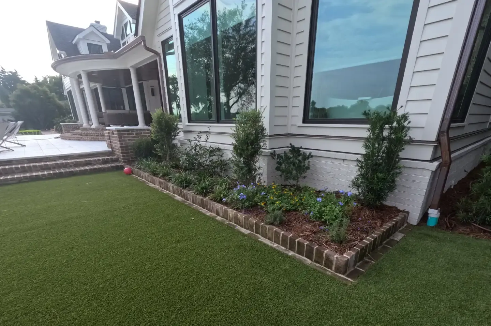

Laying Sod in Charleston, and Making It Last

The Fastest Change You Can Make to a Property
A new lawn is the fastest change we can make to a property, and the part that decides whether it stays green happens before any sod is laid.

The Grade Under It Is the Job
We spray and kill the old grass and the weeds, dig the old grass out, regrade the yard as necessary, and then lay the new sod. Poor grading is why new sod ends up lumpy, and a lumpy lawn scalps on every high spot the first time it is mowed.
After laying we roll the sod, which presses out the air pockets and levels the surface.
Price: $750 a pallet installed, moving up or down with the size of the job. That does not include the dig-out or the regrading before it.
Zoysia or St. Augustine
Those two cover most Charleston lawns. Which one comes down to sun, shade and how the yard gets used, and we will tell you plainly which suits your site rather than which we have on the truck.
Watering, Which Is Where Most New Lawns Are Lost
Water every day for the first two weeks, in the morning or around midday. Thirty minutes is enough, depending on heat. Avoid watering late in the day or at night — sod that sits wet overnight can rot or pick up a fungus.
That is also why we would rather install irrigation with a new lawn than hope hand watering happens on schedule.
Timing, and Why New Sod Fails
The best window is mid-summer through early fall. The trickiest is February and March: new growth is fragile when the sod is harvested and laid, varieties come out of dormancy at different rates, and heavy rain delays the job when the farm cannot get on the ground to harvest.
When new sod fails, it is one of four things:
- Poor grading, which leaves a lumpy yard.
- Improper watering, in either direction.
- Dogs or heavy traffic in the first couple of weeks.
- Not enough sun — sod laid where that variety will not grow.
For what we charge and how the work runs, see sod installation.
Making It Last: What the Research Says
Watering After the First Two Weeks
Daily watering is for establishment only. Clemson Extension's rule is never water grass every day except while a new lawn is establishing. After that, water deeply and less often: about 1 inch on heavy or clay soil, and half an inch on sandy soil, then let it dry out. Water early in the morning; it is the most efficient time and helps keep disease down. Too much water encourages weeds and disease as well as a bigger bill.1
The lawn tells you when it needs water: a bluish-gray cast, footprints that stay after you walk on it, and leaf blades that wilt or roll. To see what your sprinklers actually put down, set out five to ten straight-sided cans, such as tuna cans, run the system for 15 minutes and measure.1
In Charleston, which meter the sprinklers run on matters. Charleston Water bills sewer on 95 percent of the water a single-family home uses unless it has an irrigation meter, and irrigation meters are not charged for sewer.2 At 2026 rates, a Ccf (748 gallons) on the lawn costs $2.68 inside the city through an irrigation meter, and about $13.41 through the house meter once sewer is added: roughly five times as much for the same water.3
Mowing
Clemson recommends 2.5 to 4 inches for St. Augustinegrass and 1 to 2 inches for zoysiagrass. Never take off more than a third of the height in one mowing, keep the blade sharp so the grass heals cleanly, and leave the clippings on the lawn, where they return nutrients to the soil.4 Mowing St. Augustine too high causes its own trouble: the lower canopy stays wet, which leads to thatch and disease.5
Sun
Clemson Cooperative Extension calls St. Augustinegrass the most shade-tolerant warm-season grass, but says it still needs 4 to 6 hours of sun to thrive.5 Zoysia forms a dense lawn in full sun and partial shade but thins out in dense shade.6
Zoysiagrass handles light or moderate shade better than centipedegrass, but Clemson is plain that neither survives heavy shade, and that bermudagrass tolerates almost none. Its shade-tolerant zoysia picks are El Toro, Diamond, Belaire and Cavalier.7
Under a dense live oak canopy that lets through less than a few hours of sun, no grass is a sure thing, which is worth knowing before paying to sod it.
Feeding and Pests
For zoysia, do not fertilize in spring until the lawn has fully greened up, and make the last nitrogen feeding at least six weeks before the first frost.6 St. Augustine's biggest weakness is the chinch bug, which does extensive damage if it is not controlled early; the improved varieties are also prone to large patch and gray leaf spot.5
Sources
- Clemson Cooperative Extension, Home & Garden Information Center, Watering Lawns (Polomski and Shaughnessy, 2019). Source
- Charleston Water System, Sewer Rates, effective January 1, 2026. Source
- Charleston Water System, Water Rates, effective January 1, 2026. Source
- Clemson Cooperative Extension, Home & Garden Information Center, Mowing Lawns (HGIC 1205). Source
- Clemson Cooperative Extension, Home & Garden Information Center, St. Augustinegrass. Source
- Clemson Cooperative Extension, Home & Garden Information Center, Zoysiagrass. Source
- Clemson Cooperative Extension, Home & Garden Information Center, Growing Grass in Shade. Source
Frequently Asked Questions
How much does sod cost in Charleston?
$750 a pallet installed, moving with the size of the job. That does not include killing and digging out the old grass or regrading the yard first.
How often should I water new sod?
Every day for the first two weeks, in the morning or around midday, never late in the day. Thirty minutes is enough, a little more in serious heat. Sod that stays wet overnight can rot or pick up a fungus.
When is the best time to lay sod here?
Mid-summer through early fall. February and March is the trickiest window, because new growth is fragile when the sod is harvested and laid and varieties come out of dormancy at different rates.
Why did my new sod die?
Usually poor grading, improper watering, dogs and heavy traffic in the first couple of weeks, or sod laid where it does not get the sunlight that variety needs.
Which grass is best for a shady Charleston yard?
Zoysia and St. Augustine are the two we install most. Which one depends on sun, shade and how the yard is used, and we will tell you which suits your site.
See It Built
Projects where we put this into practice.


Planning a Project of Your Own?
See everything we design and build, or get in touch to talk through your ideas with Doug and Zach.